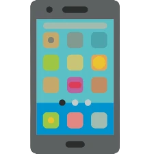

Écrire et rédiger
J'ai un goût prononcé pour les mots, ce qui explique cet attrait pour la rédaction.
Par ailleurs, la rédaction démontre mon souci du détail, et le fait que j'aime prendre de l'avance dans
mes projets, notamment dans les articles.
Conférences tech
Qu'elles soient en ligne ou en présentiel, j'apprécie grandement assister à des conférences d'annonces
dans le domaine des nouvelles technologies.
Parcourir les salons tech, c'est aussi l'occasion pour moi de faire d'incroyables rencontres.

High Tech
Mon activité de rédacteur tech m'amène à m'intéresser au monde en constante évolution des nouvelles
technologies. C'est à la fois de l'émerveillement et de la curiosité, alors je me pose plein de
questions sur pourquoi et comment ces technologies sont fabriquées !